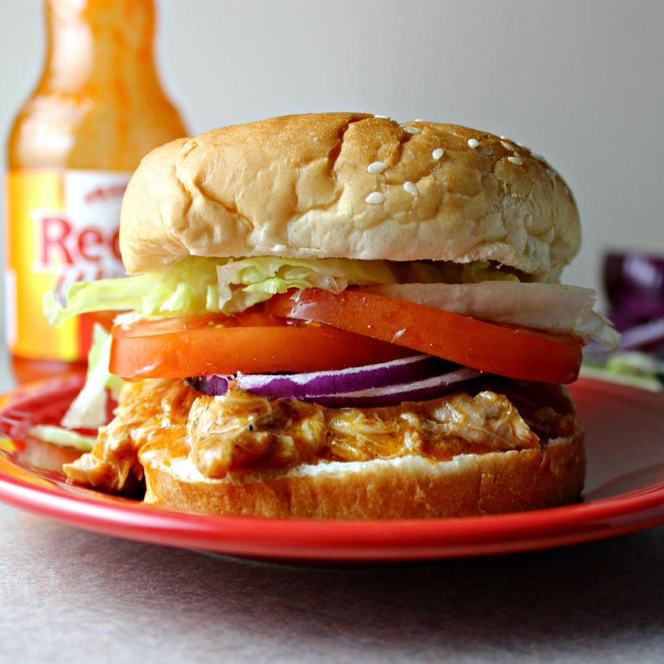

This is a crockpot buffalo chicken sandwich that is easy to make, as long as you have a crockpot that is. This sandwich will satisfy anyones hunger, especially if you are a huge fan of buffalo wings. This sandwich does take a while to make sitting at 1 hour per sandwich but boy will it be worth it. You can't beat handmade sandwiches such as this one. Ready to try one of these delicious sandwiches for youself. Keep scrolling to learn how to make one for yourself, or for your family. And yes, you should be able to make this even if you are someone who doesn't cook. And yes, I'm talking about you. Now come on, don't be shy and get to cooking!